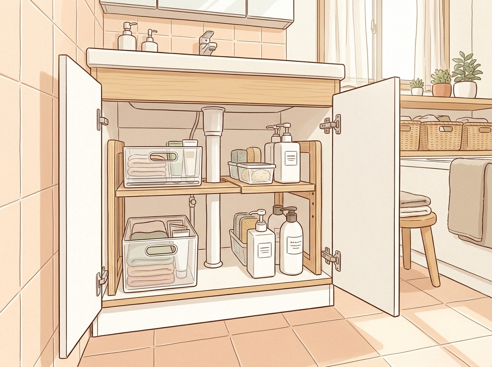

洗面台下収納の選び方
狭い洗面所で失敗しない4つのポイント
洗面台の下は真ん中に排水管が通っていて、奥行きも高さも中途半端な空間です。なんとなく物を詰めると、奥の物が取り出せなくなりがちです。この記事では、狭い洗面所や賃貸でも使いやすい収納の選び方と、タイプ別の候補を紹介します。
※本記事にはプロモーション（楽天・Yahoo!ショッピングのアフィリエイト）を含みます。価格・レビューは販売ページの情報です。
- 洗面台下を測るときに見ておきたい場所
- 伸縮棚・引き出し式など収納タイプの違い
- 置き方別に選んだ洗面台下収納5つ
HOW TO CHOOSE選び方のポイント
1まずは排水管の位置と内寸を測る
幅・奥行・高さと排水管の位置を先に測る
洗面台下は、扉の内側の幅だけでなく、奥行きや高さ、排水管がどこを通っているかで置けるものが変わります。扉の蝶番や手前の段差も意外と邪魔になるので、ふさがらない範囲を測っておきましょう。狭い洗面所では数cmの差で入らないこともあるため、商品サイズは「最小〜最大」の幅で確認するのがおすすめです。
2伸縮タイプなら排水管をよけて置ける
幅を変えられる棚なら配管の横にも置ける
幅を伸ばしたり縮めたりできる棚は、洗面台下の幅に合わせやすく、棚板を外したり位置をずらしたりして排水管をよけられるものもあります。賃貸で引っ越しの予定がある人も、幅を調節できるタイプなら次の家で使える可能性があります。購入前に、伸縮できる範囲が自宅の内寸に合うかを確認してください。
3奥の物は引き出し式で手前に出す
奥まで使うならスライドする収納が便利
洗面台下の奥は手が届きにくく、ストックをしまい込んで忘れがちな場所です。レールで手前に引き出せるボックスなら、奥の物も取り出しやすくなります。取り付けに両面テープを使うタイプもあるので、賃貸の場合は貼る場所や素材を事前に確認しておくと安心です。
4高さを活かすなら段数や上置きで
ボトルの高さに合わせて段数と置き方を選ぶ
洗剤やシャンプーの替えボトルは背が高く、段の間隔が合わないと入りません。棚の高さを調節できるラックや、ボトル向けのストッカーを選ぶと縦の空間を無駄にしにくくなります。すでに収納ボックスを使っているなら、その上に置くラックを足して空いた高さを使う方法もあります。
PICKSタイプ別の候補
| タイプ | 価格の目安 | こんな人に |
|---|---|---|
| 伸縮棚 | 1,660円 | 洗面台下が狭めで、まずは手頃な価格で棚を作りたい人に |
| 引き出し式 | 2,980円 | 奥にしまったストックを手前に出して、取り出しやすくしたい人に |
| 2段 | 7,700円 | 見た目もすっきりした、しっかりめのスチールラックを選びたい人に |
| 4段 | 3,520円 | 洗剤やシャンプーの替えボトルが多く、並べて見渡したい人に |
| 上置き | 3,850円 | 今あるボックスの上の空きスペースを活かしたい人に |
 伸縮棚
伸縮棚洗面台下スペースラック 伸縮タイプ
- 幅36〜53cmに伸縮、排水管を避けて置ける
- 棚板にスリットがなく小物が落ちにくい
- 側面の穴に差して棚の高さを調節できる
こんな人に：洗面台下が狭めで、まずは手頃な価格で棚を作りたい人に
1,660円レビュー304件 ★4.482026/10/07時点・価格は変わることがあります
PR楽天で見る ↗Yahoo!で探すAmazonで探す 引き出し式
引き出し式伸縮スライドボックス
- 幅が左右に伸縮、奥行は33cm・42cmから選択
- ベアリングレールで重くても手前にスライド
- 高さ6cmのすのこ状、耐荷重は約10kg
こんな人に：奥にしまったストックを手前に出して、取り出しやすくしたい人に
2,980円レビュー1,318件 ★4.532026/10/07時点・価格は変わることがあります
PR楽天で見る ↗Yahoo!で探すAmazonで探す 2段
2段伸縮シンク下ラック 2段 D30
- 横幅を変えられ、排水ホースを避けて置ける
- 棚の高さを5.5cm刻みで調節できる
- スチール製で安定感のあるラック
こんな人に：見た目もすっきりした、しっかりめのスチールラックを選びたい人に
7,700円レビュー132件 ★4.682026/10/07時点・価格は変わることがあります
PR楽天で見る ↗Yahoo!で探すAmazonで探す 4段
4段シンク下ボトルストッカー 4段
- 棚板に角度があり、見やすく取り出しやすい
- 洗剤やシャンプーのボトル、スプレー缶に対応
- スチール製で、サッと拭いて手入れできる
こんな人に：洗剤やシャンプーの替えボトルが多く、並べて見渡したい人に
3,520円レビュー136件 ★4.682026/10/07時点・価格は変わることがあります
PR楽天で見る ↗Yahoo!で探すAmazonで探す 上置き
上置き収納ボックス上ラック 2個組
- 収納ボックスの上に置くだけで棚が増える
- 約幅31×奥行20×高さ28cmの2個組
- 耐荷重はラック1つあたり約1kg
こんな人に：今あるボックスの上の空きスペースを活かしたい人に
3,850円レビュー154件 ★4.532026/10/07時点・価格は変わることがあります
PR楽天で見る ↗Yahoo!で探すAmazonで探す洗面台下の形は家ごとに違うので、まずはメジャーで測るところから始めましょう。排水管の位置と、しまいたい物の量を書き出しておくと、合う収納を選びやすくなります。